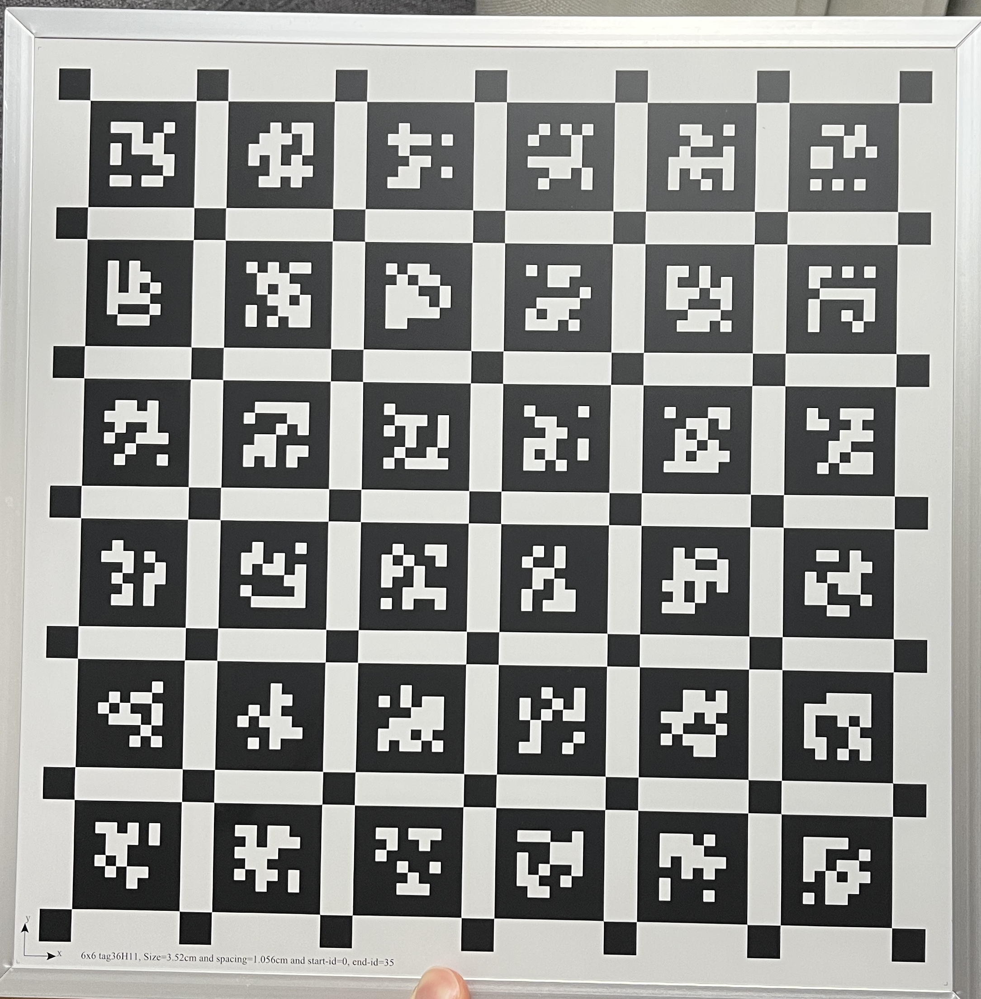
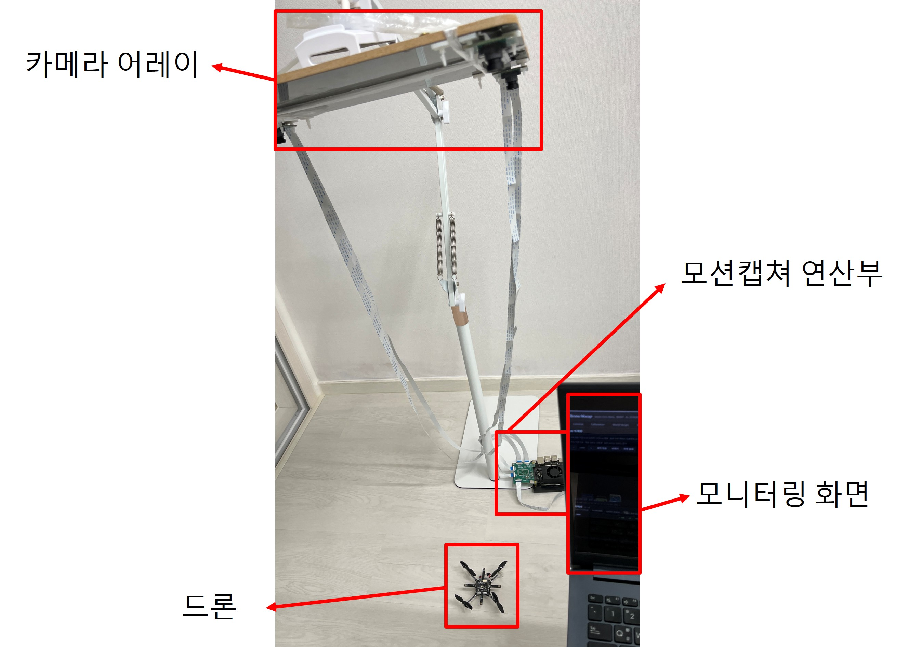
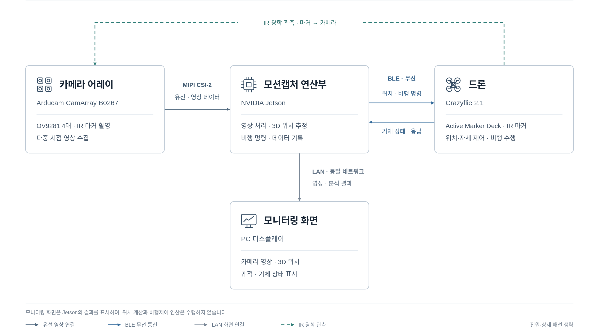
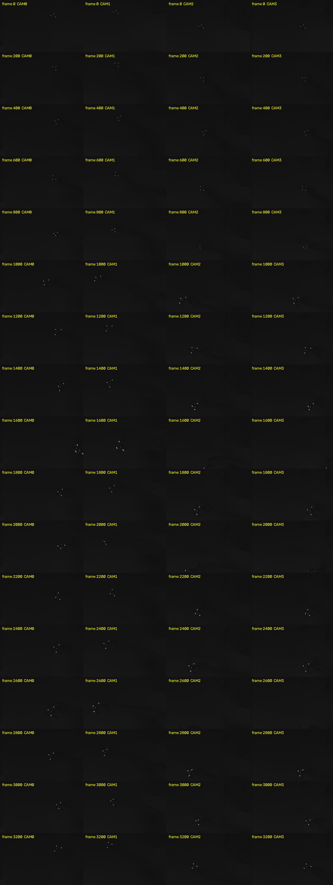
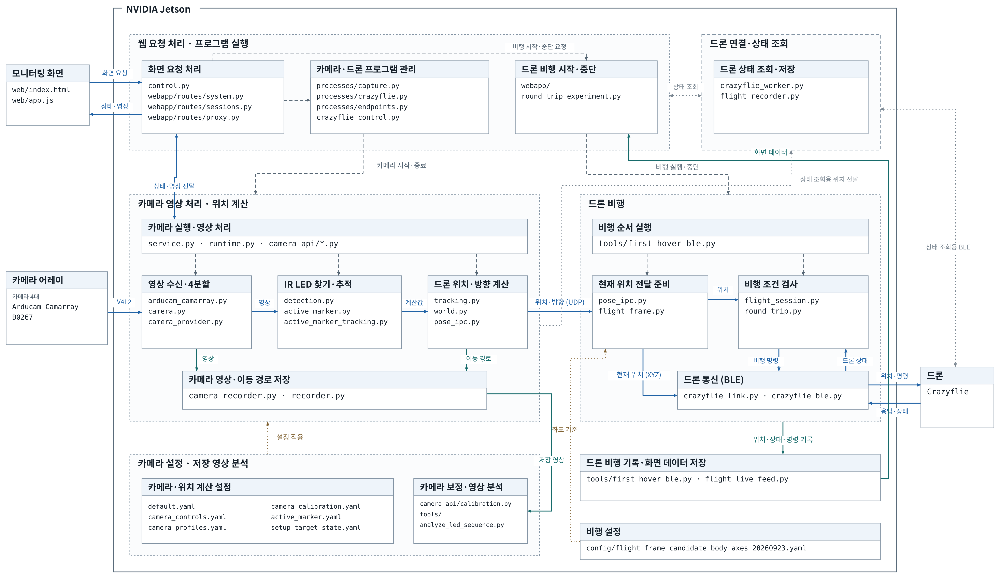
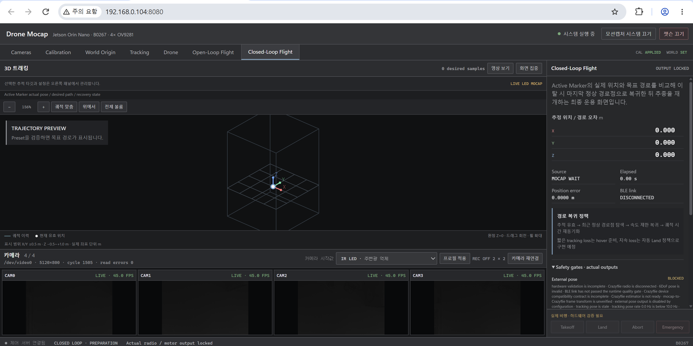

4카메라 모션캡처 시스템 2차 구현
1차 구현에서는 Jetson과 동기화 카메라 4대를 연결하고 체커보드의 3차원 이동을 추적했습니다. 이번에는 직접 선정·조립한 Crazyflie에 IR Active Marker를 장착하고, 네 카메라가 계산한 위치를 BLE로 다시 기체에 전달해 상승·중심 유지·착륙까지 하나의 폐루프로 연결했습니다. 화면에서 점을 찾는 단계가 실제 드론을 제어하는 시스템으로 확장된 과정입니다.
체커보드 추적 → 실제 드론 조립 → IR LED 추적 → 3차원 위치 계산 → BLE 외부 위치 전달 → 폐루프 호버·착륙
1. 체커보드 추적을 실제 드론 제어로 확장
1차 구현의 목표는 카메라 보정, 월드 원점 설정과 체커보드 궤적 표시였습니다. 그 기반을 유지하면서 표적만 드론으로 바꾼 것이 아니라, 위치 결과를 다시 기체의 상태 추정과 비행 제어에 넣는 왕복 경로를 추가했습니다. 카메라가 관측한 드론 위치가 Jetson에서 계산되고, 계산된 위치가 무선으로 기체에 전달되며, Crazyflie 내부 위치 제어기가 목표점과 현재 위치의 차이를 줄이도록 자세와 모터 출력을 조절합니다.
이 과정에서 중요한 변화는 추적 결과가 더 이상 화면에 그려지는 좌표로 끝나지 않는다는 점입니다. 카메라 보정과 원점 설정이 잘못되면 그 오차가 그대로 기체의 현재 위치로 들어가고, 반대로 통신이나 상태 추정이 늦으면 카메라가 올바른 위치를 보더라도 제어기는 과거 상태를 기준으로 반응합니다. 그래서 2차 구현은 영상 처리, 좌표 변환, BLE 전달, 기체 제어와 기록을 한 흐름으로 묶어 각 단계의 입력과 출력을 함께 확인하는 방향으로 개발했습니다.
- 관측4대의 OV9281 카메라가 드론의 IR LED 마커를 같은 촬영 주기로 관측합니다.
- 측위Jetson이 카메라별 LED 점을 검출하고 보정값을 이용해 드론의 3차원 위치·방향을 계산합니다.
- 전달계산한 외부 위치를 BLE 통신으로 Crazyflie 상태 추정기에 보냅니다.
- 제어기체 내부 위치 제어기가 목표 위치를 유지하도록 보정하며, Jetson은 명령·상태·궤적을 기록합니다.


2. 드론을 직접 선정하고 IR 마커 기체로 조립
외부 위치를 받아 내부 위치 제어에 사용할 수 있고, 소형 실내 실험에 적합한 Crazyflie 2.1+와 Active Marker Deck을 선정했습니다. 카메라·Jetson 프로그램과의 연결 가능성, BLE 통신, 기체의 기존 상태 추정·위치 제어 기능을 함께 검토한 뒤 과제 장비로 확보했습니다. 수령한 기체는 모터·프로펠러·배터리와 마커 데크를 직접 조립하고, LED 방향과 기체 전방축을 확인해 기존 모션캡처 시스템에 연결했습니다.
조립 단계에서는 단순히 부품을 결합하는 데서 끝내지 않고, 네 모터와 프로펠러의 회전 방향, 배터리와 데크의 체결 상태, 마커가 가리키는 방향과 소프트웨어가 사용하는 기체 전방축을 차례로 맞췄습니다. 카메라 좌표와 드론 좌표가 서로 다른 상태에서는 위치 오차를 줄이려는 명령이 실제 공간에서 엉뚱한 방향으로 작용할 수 있기 때문에, 실물 조립 기준을 이후 좌표 변환과 실험 기록에도 동일하게 유지했습니다.


3. 카메라–Jetson–드론을 잇는 전체 시스템
하드웨어는 카메라 어레이, Jetson 연산부, Crazyflie와 모니터링 PC의 네 블록으로 나뉩니다. OV9281 카메라 4대의 영상은 CamArray HAT를 거쳐 MIPI CSI-2로 Jetson에 들어옵니다. Jetson은 영상 처리와 3차원 위치 계산, 실험 기록과 비행 명령을 담당하고, 드론과는 BLE로 위치·명령과 상태·응답을 주고받습니다. 브라우저 화면은 같은 네트워크로 Jetson의 영상, 계산 위치, 목표 경로와 기체 상태를 표시합니다.




4. 동기화된 네 영상에서 드론 위치를 계산하는 방법
현재 Jetson 배포 프로그램은 B0267이 보내는 5120×800 한 장의 합성 프레임을
입력으로 받습니다. 이 프레임 안에는 1280×800 영상 네 장이 가로로 이어져 있습니다.
프로그램은 한 합성 프레임을 네 구간으로 나누고, 네 결과에 같은
capture_cycle_id와 촬영 시각을 붙입니다. 따라서 서로 다른 시각의 화면을
임의로 모으는 대신, 같은 캡처 주기의 네 시점을 한 세트로 위치 계산에 사용합니다.
CamArray가 동기화한 네 흑백 영상을 하나의 합성 프레임으로 전달합니다.
Jetson이 5120×800 영상을 1280×800 카메라 영상 네 장으로 분리합니다.
카메라별 밝은 점을 찾고 Active Marker의 LED 배치와 대응시킵니다.
카메라 보정값과 여러 관측을 이용해 드론의 3차원 위치·방향을 계산합니다.
월드 좌표를 실험 시작점 기준 비행 좌표로 바꿔 기록·화면·BLE 전송에 사용합니다.
IR LED는 주변 조명과 반사점에 영향을 받기 때문에 자동 밝기만 사용하지 않았습니다. 실제 촬영 화면을 보며 네 카메라의 노출값과 아날로그 게인을 직접 조절해 마커는 분명하게 남고 배경은 어둡게 보이도록 맞췄습니다. 이 설정과 캡처 주기, 검출 결과와 유효 카메라 수를 함께 기록해 영상과 위치 데이터를 다시 대조할 수 있게 했습니다.
아래 이미지는 실제 45fps 회전 기록에서 같은 시점의 네 카메라 영상을 모은 자료입니다. 배경을 어둡게 억제하면 Active Marker가 카메라마다 세 개의 밝은 점으로 보이고, 드론을 회전시키면 점 사이의 상대 배치도 함께 바뀝니다. 프로그램은 단순히 가장 밝은 한 점을 드론으로 취급하지 않고, 이 점들의 배치와 여러 카메라에서의 관측을 함께 사용해 마커의 대응 관계를 정한 뒤 3차원 위치·방향을 계산합니다.


한 카메라에서 점을 찾았다는 사실만으로 3차원 위치가 정해지는 것은 아닙니다. 같은 촬영 주기의 관측을 카메라 보정값과 결합하고, 충분한 카메라에서 대응이 성립했을 때만 유효 pose를 만듭니다. 이렇게 얻은 월드 좌표는 실험 시작점과 축 방향을 기준으로 비행 로컬 좌표로 변환되며, 동일한 값이 웹 궤적과 기록 파일, 기체로 보내는 외부 위치의 기준이 되도록 연결했습니다.


GitHub 협업을 고려한 모듈 구조
프로그램도 이 블록도와 같은 경계로 나눴습니다. 카메라 프레임 처리와 pose 계산, 최신 pose 전달, 비행 상태 관리, 목표 경로 실행, 웹 실험 화면을 서로 다른 모듈로 분리해 한 기능의 수정이 다른 장치 경로를 불필요하게 건드리지 않도록 했습니다. 팀원들은 각자 중점적으로 맡은 부분을 개발하면서도 공통 데이터 형식과 연결 지점은 함께 검토했고, GitHub 브랜치와 PR에서 변경 범위·실행 결과를 확인한 뒤 통합했습니다.
drone_mocap/
├─ runtime.py 동기 프레임 처리 · Active Marker pose 생성
├─ pose_ipc.py 가장 최근의 유효 pose를 비행 프로세스에 전달
├─ flight_session.py 준비 · 이륙 · 비행 · 착륙 상태 관리
├─ round_trip.py 목표점 이동과 왕복 경로 실행
├─ processes/
│ ├─ capture.py 카메라·모션캡처 작업 프로세스 관리
│ └─ crazyflie.py Crazyflie BLE 작업 프로세스 관리
└─ webapp/
├─ round_trip_experiment.py 웹 실험 시작·중단과 실행 상태
└─ routes/sessions.py 실험 기록 세션 API
예를 들어 runtime.py가 같은 capture_cycle_id의 네 영상을
처리해 pose를 만들면, pose_ipc.py가 최신값을 전달합니다. 비행 코드는
이 값을 읽고, 웹 코드는 같은 실험의 상태와 기록을 화면에 표시합니다. 단순히 파일을
나눈 것이 아니라 데이터가 넘어가는 지점을 명확히 해 병렬 개발과 통합 검증이 가능하도록 구성했습니다.
5. 추적과 드론 제어를 한눈에 보는 실험 화면
1차 구현의 보정·원점 설정·추적 기능을 유지하면서 화면 구조와 정보 우선순위를 다시 설계했습니다. 이제 카메라가 마커를 보고 있는지, 계산된 3차원 위치가 어디인지, 그 위치가 실제 드론 제어로 이어지고 있는지를 한 화면에서 확인할 수 있습니다. 장치 설정 화면과 비행 화면을 무작정 늘어놓는 대신, 실제 실험의 흐름이 자연스럽게 이어지도록 구성한 것이 2차 구현의 가장 큰 변화입니다.
3차원 화면에는 드론에 지시한 경로를 옅게, 네 카메라가 측정한 실제 MoCap 궤적을 진한 흰색으로 표시합니다. 옆 패널의 BLE 연결 상태와 실험 단계도 같은 화면에 두어, 목표와 실제 움직임의 차이를 보면서 실행 상태를 바로 판단할 수 있습니다. 실험이 끝난 뒤에는 화면에서 본 움직임을 같은 세션의 궤적·기체 로그와 다시 대조할 수 있어, 모니터링 화면이 곧 실험 운용과 분석의 출발점이 됩니다.


6. 외부 위치 피드백을 이용한 드론 제어
이 시스템의 핵심은 영상을 보여주는 데서 끝나지 않고, 측정 위치를 다시 드론 제어에
사용하는 폐루프를 만든 것입니다. runtime.py가 계산한 월드
좌표를 실험 시작점 기준의 비행 좌표로 바꾸고, 최신 위치를 BLE로 Crazyflie의 상태
추정기에 전달합니다. 기체는 외부 위치와 내부 센서로 추정한 상태를 바탕으로 목표
위치와의 오차를 줄이는 방향의 자세와 모터 출력을 계산합니다.
제어는 위치 오차를 바로 모터 값으로 바꾸는 한 단계 계산이 아닙니다. Crazyflie의 계단식 제어 구조에서 위치 목표는 속도 목표로, 속도 목표는 roll·pitch 같은 자세 목표로, 자세 오차는 각속도와 모터 출력으로 이어집니다. 그래서 이번 구현에서는 목표 위치, 실제 MoCap 위치, 기체의 추정 상태와 비행 단계를 같은 실험 단위로 기록했습니다. 첫 검증은 상승 후 중심을 유지하고 제어된 하강으로 착륙하는 동작이었으며, 이는 앞으로 여러 목표점을 잇는 경로 제어로 확장하기 위한 기준 동작입니다.
현재 소스에는 고정 중심 유지뿐 아니라 목표점을 이동하는 왕복 실험 경로도 분리되어 있습니다. 다음 단계에서는 높이와 이동 시간을 단계적으로 넓히고, 직선·왕복·원과 특정 모양 경로의 목표값과 실제 경로를 같은 좌표계에서 비교할 예정입니다. 이를 통해 “떠 있었는가”보다 “명령한 형상을 얼마나 정확하고 반복 가능하게 따라갔는가”를 평가합니다.
관련 개념은 Bitcraze의 외부 위치 입력, 상태 추정, 계단식 제어기 구조 문서와 실제 구현을 함께 대조했습니다.
7. 케이지와 카메라 고정 구조 제작
반복 비행과 정량 측정을 위해 팀원들과 보호 케이지를 제작하고 있습니다. 파이프 구조를 조립하고 카메라가 들어갈 위치를 확인하면서, 케이지가 완성된 뒤에도 네 카메라의 상대 위치와 방향이 쉽게 변하지 않도록 장착 방식을 함께 검토했습니다. 각자 중점적으로 진행한 케이지 조립, 카메라 CAD와 추적 프로그램은 사진·치수·실행 결과를 공유하며 서로 보완했고, 변경 사항은 GitHub PR로 검토한 뒤 전체 시스템에 합쳤습니다.


실제 PCB 크기에서 시작한 카메라 장착 설계
카메라 모듈을 케이지에 정확히 고정하려면 PCB와 렌즈, 리본 케이블의 크기를 먼저 맞춰야 했습니다. 보유한 OV9281 카메라 PCB를 직접 측정해 CAD에 실물 치수로 옮기고, 앞·뒤면 부품과 렌즈 돌출 높이까지 표현해 함께 제작하는 팀원들에게 전달했습니다. 이 모델을 기준으로 케이스와 덮개, 파이프 체결부를 출력하고 실제 PCB와 대조하면서 홀 위치와 케이블 여유를 조정했습니다.


실제 카메라와 치수 검증용 출력 모델 비교
먼저 실제 카메라를 바로 케이스에 넣기 전에, PCB 외곽과 체결 홀, 렌즈 높이를 그대로 옮긴 치수 검증용 출력 모델을 만들었습니다. 전면과 후면, 측면을 실제 모듈 옆에 놓고 비교하면서 CAD 치수가 출력 과정에서도 유지되는지 확인했습니다. 이 비교용 모델 덕분에 구조물을 함께 제작하는 과정에서도 실제 카메라를 반복해서 분리하지 않고 장착 위치와 간섭을 검토할 수 있었습니다.


케이지 고정용 케이스 본체와 덮개
비교 모델로 치수를 확인한 뒤에는 카메라가 들어갈 본체와 후면 덮개를 별도로 제작했습니다. 렌즈 개구부와 네 모서리 체결 홀, 리본 케이블이 빠져나오는 공간을 나누어 설계했고, 출력물을 조립해 덮개가 PCB를 누르지 않는지 확인했습니다. 케이지 체결부는 카메라 방향을 유지하면서도 보정이나 정비 때 분리할 수 있도록 본체와 독립된 구조로 검토하고 있습니다.


8. 고정형 측정 환경에서 경로 제어 검증으로
현재까지 카메라 입력, 보정·원점, Active Marker 위치 추정, BLE 외부 위치 전달과 실제 드론 제어를 하나의 실험 흐름으로 연결했습니다. 케이지와 카메라 고정 구조가 완성되면 네 카메라의 위치가 반복 실험 중에도 유지되므로, 같은 조건에서 다시 보정하고 기준 위치에 대한 오차와 반복성을 정량적으로 비교할 수 있습니다.
이후에는 정지 위치뿐 아니라 직선·왕복·원·지정 모양 경로의 목표와 실제 비행 궤적을 비교합니다. 고정된 카메라 환경에서 얻은 오차, 응답 시간과 재현성 자료를 바탕으로 시스템의 성능을 정리하고 논문 작성까지 마무리할 계획입니다. 즉 다음 단계는 기능을 더 붙이는 것보다, 지금 완성한 폐루프가 여러 경로에서도 얼마나 정확하게 반복되는지를 측정 가능한 결과로 만드는 과정입니다.